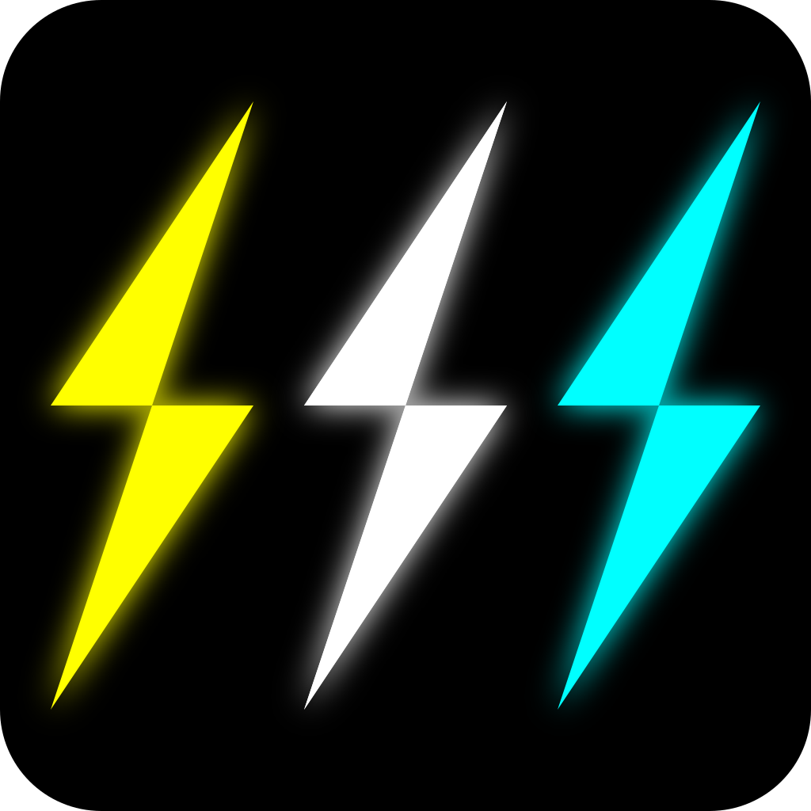
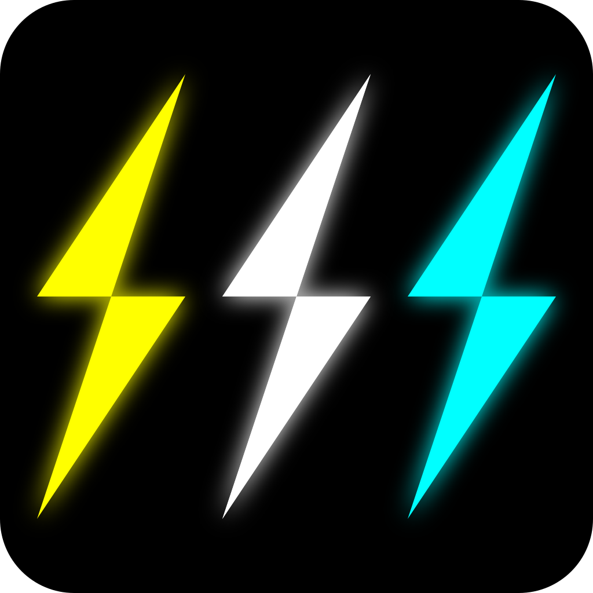

Introductie
In mijn vrije tijd game ik meestal, maar ik vind het ook erg leuk om te programmeren. Daarnaast vind ik het ook leuk om te reizen. Mijn favoriete land waar ik tot nu toe geweest ben, is Zwitserland. Als ik daar op vakantie ben, hike ik vaak met mijn vader door de bergen en maak ik daar ook vaak veel foto's van het mooie landschap. Als ik game speel ik meestal games zoals Minecraft, Stormworks, Fortnite en Stardew Valley. Ook doe ik wel eens aan sim-racing of Euro Truck Simulator 2.
Fotografie
Als ik op een plek ben met een mooi landschap, zoals Zwitserland, maak ik daar bijna altijd wel een paar foto's van met mijn telefoon. De foto's hieronder heb ik zelf gemaakt in Zwitserland.


Ik maak ook wel eens foto's van de natuur, de zee en gebouwen. Met scouting ben ik een week naar Schotland geweest, ik heb daar toen ook een aantal foto's gemaakt.


Games
Zelf heb ik een paar video games gemaakt, deze zijn best wel simpel. "StayClose" is een game die ik in een week gemaakt heb tijdens de LÖVE Jam 2023. Het is een 2D-game waarbij ik alles zelf gemaakt heb, behalve het lettertype. Ik heb dus alle code, plaatjes en muziek voor de game gemaakt. Uiteindelijk is mijn game 41e van de 77 deelnemende games geworden.
Logo's
Voor mijn games, maar ook voor mijn sociale media accounts, website en Minecraft server maak ik mijn eigen logo's. Hieronder staan er een paar.
 
 
De linker gebruik ik meestal op mijn sociale media accounts, de middelste op mijn website en de rechter gebruik ik voor mijn Minecraft server. Ik maak al een tijdje logo's voor mezelf, maar deze drie die hierboven staan heb ik het laatst gemaakt en ik vind ze zelf de beste die ik gemaakt heb.
Muziek
Als ik onderweg ben of als ik achter mijn computer zit luister ik vaak naar muziek. Een paar van mijn favoriete artiesten zijn Ava Max, Dua Lipa, KIRA, Alessandra en Charli XCX. Mijn favoriete nummer op dit moment is "Ghost" van Ava Max.